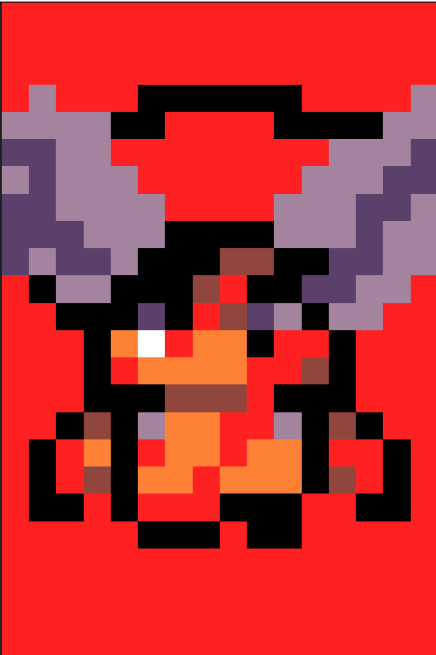
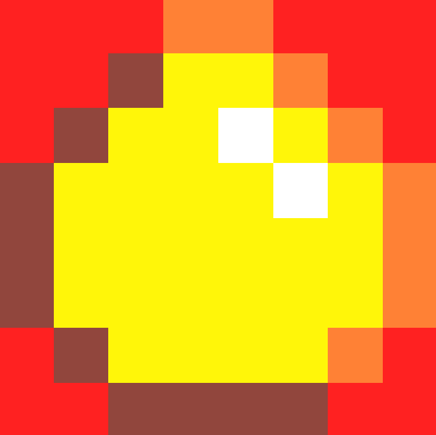
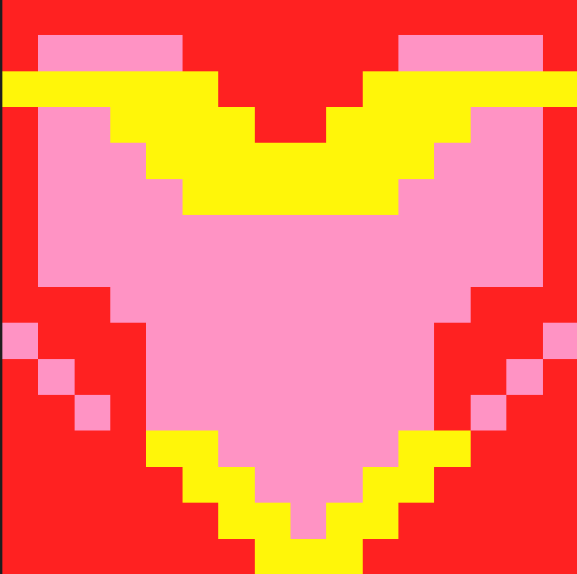
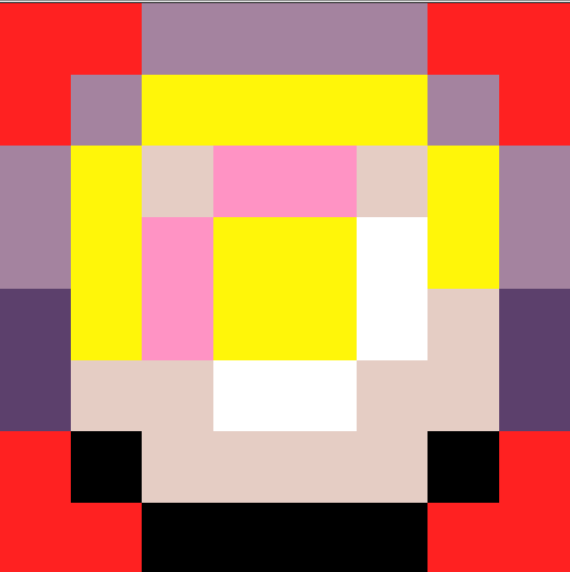
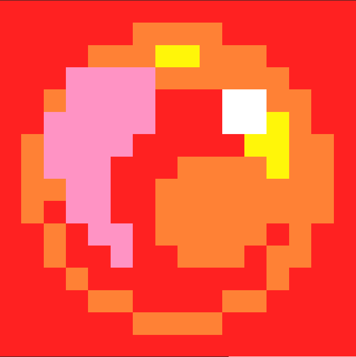
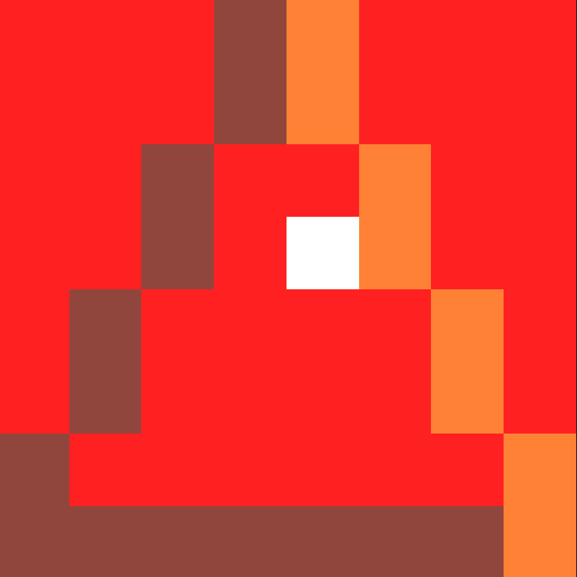
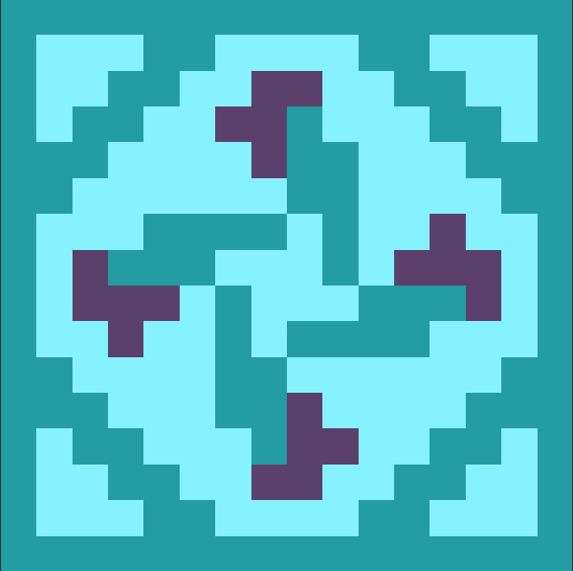
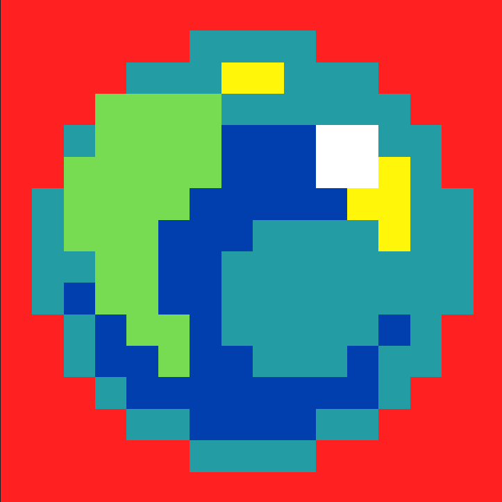
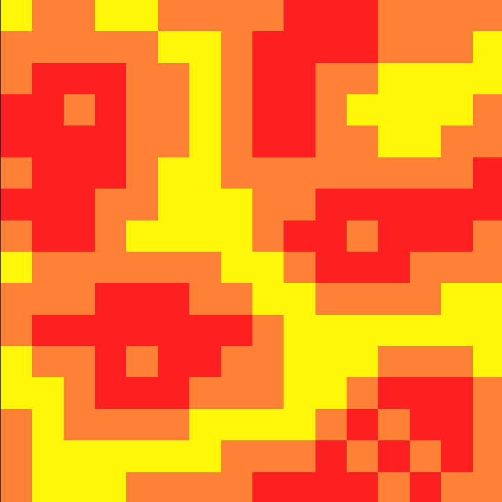
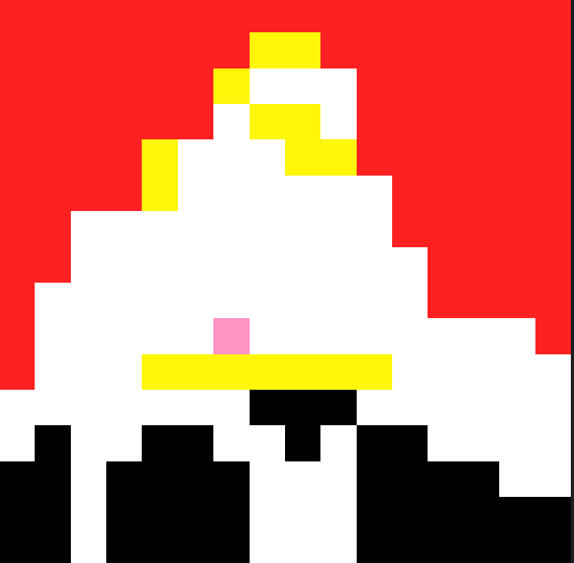

| Azalpenak | Irudiak | Izenak |
|---|---|---|
| Pertsonaia nagusia | Hau pertsonaia nagusia da, honek tiroak eta saltoak egiteko gai da, bere helburua laberintotik ateratzea da hortarako hainbat etsai akabatu beharko ditu. |

|
| Deabrua | Hau deabrua da honekin bigarren mapak elkartzen zara, hau ez da zu hiltzen saiatzen honek aholkuak emanten dizkizu nora joan eta zer egin behar duzun jakiteko. |
 |
| Tiroka etsaia | Hau tiroak botatzen dituen etsaia da, hau bakarra da berak bakarrik botzatzen ditu tiroak, bere helburua nik saltoak ez egitea, baina ez da erresa tiroak poliki botatzen ditue eta bizitza barra txikia dauka |

|
| Etsai txikiak | Bi etsai hauek zazpi etsai txikietako batzuk dira, hauen intentzioa ni akatzea da baina ez daukate erres nik botoi berde bat ikutzean ateratzen dira eta beti dijoan norantza berdinean, hauak hiltzean txampon batzuk eroriko zaizkie |

|
| Jarraitze etsaia | Hau jarraitzen nauten etsai bat da bi daude jarraitzen nautena, lehenengo mapan lehenengo botoi naranja ikutzean agertzen dira, hauen helburua ni bizitza gabe uztea da, bizitza barra dute beraz ez da oso erraza hauekin bukatzea |

|
| Lehenengo txamponak | Hau lehenengo mapako txmpona da, hau ikutzean puntu bat lortuko duzu, 12 gehiago lortuta lehenengo mapa pasatzea lortuko duzu. |
 |
| Bizitzak | Hau bi mapetan agertuko da, hau ikutzean bizitza bat gehiago lortuko duzu, hainbat daude 2 mapetan banatuta beraz ez da oso zaila jolasa irabaztea. |
 |
| Bigarren txamponak | Hau bigarren mapan agertuko da, zazpi etsaiak hildakoan, haiek beste txampon batzuk botako dizkizute, hauek bukaerarako balio dizute. |
 |
| lehenengo puntua | Hau lehenengo mapan agertuko da, hau ikutzean bi etsai bizitza daukatenak agertuko zira hauek jarraitze etsaiak izango dira. Puntua bai ahala bai ikutu behar duzu, puntu bat lortzen duzulako. |
 |
| Bigarren puntua | Hau lehenengo mapan agertuko da, lehenengo txamponan guztiak dituzunean, beste mapara bidaltzen zaizun puntua izango da. | |
| lehenengo gorde-Puntua | Hau lehenengo mapan agertuko den gorde puntua da, hauek ikutzen badituzu eta gero bizitza bat galtzen baduzu, azkeneko gorde-puntuan agertuko zara jolasa jolaste jarraitzeko. |
 |
| Bigarren gorde-Puntua | Hau bigarren mapan agertuko den gorde puntua da, hauek ikutzen badituzu eta gero bizitza bat galtzen baduzu, azkeneko gorde-puntuan agertuko zara jolasa jolaste jarraitzeko. |
 |
| Etsai txikien Puntua | Hau bigarren mapan agertuko den etsai txikien puntua da, hau ikutzean etsai txikiak agertuko dira, derrigorrez ikutu behar duzu puntu hau, bestela ez duzu jolasa amaituko. |
 |
| Laba | Hau lehenengo mapan agertuko da hauekin kontuz ibili beharko duzu, hau ikutzen baduzu bizitza bat galduko duzu eta gorde puntura itzuli beharko zara. |
 |
| Belarra | Hau lehenengo mapan agertuko da hauekin kontuz ibili beharko duzu, hau ikutzen baduzu bizitza bat galduko duzu eta gorde puntura itzuli beharko zara. |

|
| Pintxoak | Hau bigarren mapan agertuko da hauekin kontuz ibili beharko duzu, hau ikutzen baduzu bizitza bat galduko duzu eta gorde puntura itzuli beharko zara. |
 |